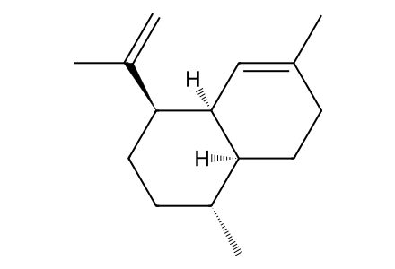
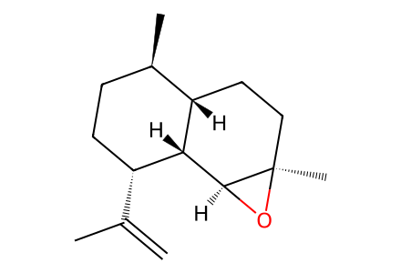
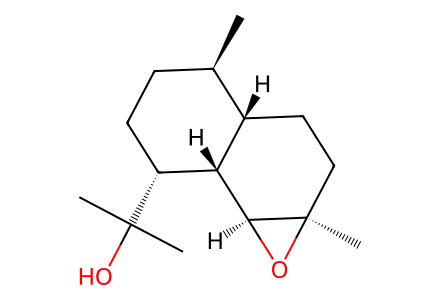
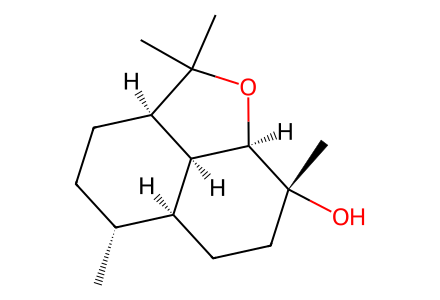
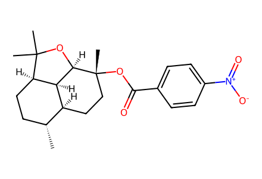
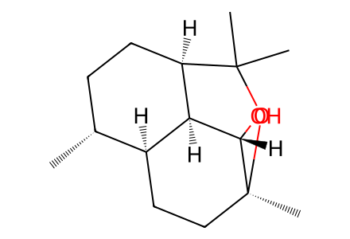
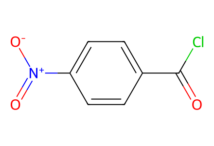

C=C(C)[C@@H]1CC[C@@H](C)[C@@H]2CCC(C)=C[C@@H]21SI pp3-5 (printed S2-S4) complete chemical preparation network from fermentation-isolated amorpha-4,11-diene 10, including base/acid branches and crystallographic derivative 14. SI pp2-3 documents microbial supply of 10, but not individually drawn biosynthetic intermediates; no inferred biosynthetic SMILES steps. Main article is unavailable. Facts compiled deterministically; independent review pending.
完整 JSON · 逐步 CSV · 路线序列 · SDF · HRMS 核对
| 事件 | 分子连接 | 报告产率 | Canonical reaction SMILES |
|---|---|---|---|
| E01 | 10 → 13 | 13: 80% | C=C(C)[C@@H]1CC[C@@H](C)[C@@H]2CCC(C)=C[C@@H]21>>C=C(C)[C@@H]1CC[C@@H](C)[C@@H]2CC[C@@]3(C)O[C@H]3[C@@H]21 |
| E02 | 13 → 3 | 3: 90% | C=C(C)[C@@H]1CC[C@@H](C)[C@@H]2CC[C@@]3(C)O[C@H]3[C@@H]21>>C[C@@H]1CC[C@@H](C(C)(C)O)[C@@H]2[C@H]1CC[C@@]1(C)O[C@@H]21 |
| E03 | 3 → 2 | 2: 95% | C[C@@H]1CC[C@@H](C(C)(C)O)[C@@H]2[C@H]1CC[C@@]1(C)O[C@@H]21>>C[C@@H]1CC[C@@H]2[C@@H]3[C@H]1CC[C@@](C)(O)[C@@H]3OC2(C)C |
| E04 | 3 → 1 + 2 | 1: 5%; 2: 80% | C[C@@H]1CC[C@@H](C(C)(C)O)[C@@H]2[C@H]1CC[C@@]1(C)O[C@@H]21>>C[C@@H]1CC[C@@H]2[C@@H]3[C@H]1CC[C@@](C)(O)[C@@H]3OC2(C)C.C[C@@H]1CC[C@@H]2[C@@H]3[C@H]1CC[C@](C)(OC2(C)C)[C@H]3O |
| E05 | 2 + PNBCl → 14 | 14: 90% | C[C@@H]1CC[C@@H]2[C@@H]3[C@H]1CC[C@@](C)(O)[C@@H]3OC2(C)C.O=C(Cl)c1ccc([N+](=O)[O-])cc1>>C[C@@H]1CC[C@@H]2[C@@H]3[C@H]1CC[C@@](C)(OC(=O)c1ccc([N+](=O)[O-])cc1)[C@@H]3OC2(C)C |

C=C(C)[C@@H]1CC[C@@H](C)[C@@H]2CCC(C)=C[C@@H]21
C=C(C)[C@@H]1CC[C@@H](C)[C@@H]2CC[C@@]3(C)O[C@H]3[C@@H]21
C[C@@H]1CC[C@@H](C(C)(C)O)[C@@H]2[C@H]1CC[C@@]1(C)O[C@@H]21
C[C@@H]1CC[C@@H]2[C@@H]3[C@H]1CC[C@@](C)(O)[C@@H]3OC2(C)C
C[C@@H]1CC[C@@H]2[C@@H]3[C@H]1CC[C@@](C)(OC(=O)c1ccc([N+](=O)[O-])cc1)[C@@H]3OC2(C)C
C[C@@H]1CC[C@@H]2[C@@H]3[C@H]1CC[C@](C)(OC2(C)C)[C@H]3O
O=C(Cl)c1ccc([N+](=O)[O-])cc1